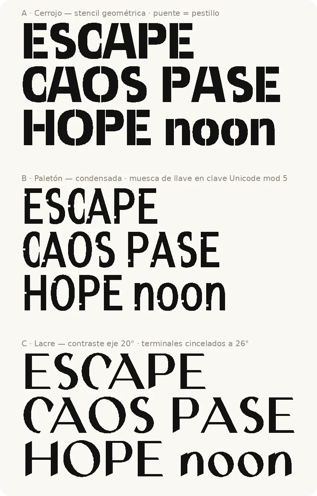

Paquete completo
TTF, OTF y WOFF2, con la licencia y un LÉEME de estado y procedencia.
Ganzúa Lacre, nombre provisional
Una tipografía de plumilla y cincel para una empresa de salas de escape. La dibujó un agente por código, de principio a fin, con la skill abierta syx--typography: cada curva sale de una regla y cada regla está comprobada.
01 — Probar
El recuadro es editable. Lleva lo que la fuente tiene hoy: minúscula, versal, cifras, signos y acentos del español.
02 — Muestrario
Las acentuadas son compuestas: la letra y su marca se colocan con anclas, y la misma marca sirve a cualquier letra que llegue descompuesta. Ante un acento, la i pierde el punto sola.
Nominal mundo humano
GUIJARRO KAYAK BURGO
0123456789 ¿?¡! «»
03 — Descargar
Libre, con la SIL Open Font License 1.1
Úsala, estúdiala, modifícala y redistribúyela, también en proyectos comerciales. Lo único que no permite es venderla sola, y sus derivados siguen en la misma licencia. Lee la licencia. El nombre es provisional: falta la búsqueda de marca.
TTF, OTF y WOFF2, con la licencia y un LÉEME de estado y procedencia.
Para instalar en Windows, macOS o Linux.
Contornos cúbicos, tal como salen del generador.
5,4 KB, comprobado: no pierde caracteres ni funciones.
04 — Proceso
Todo esto pasó en un día de trabajo entre una persona y un agente. La persona decidía; el agente dibujaba, medía y enseñaba pruebas.
Fase 0 / Concepto
El encargo cabía en una línea: una tipografía para una empresa de salas de escape. El agente escribió el brief (para qué existe, dónde se usa, qué idiomas) y bocetó tres direcciones deliberadamente lejanas en una sola hoja.

Fase 1 / Prueba de concepto
Primero n, o, H y O; después a, d, e, h y s. Cada trazo es un esqueleto con nodos, y su grosor no se dibuja: sale de la dirección del trazo respecto a una plumilla de punta ancha inclinada 20°.
Los extremos libres se cortan a cincel, 26° sobre la perpendicular del trazo, y el ángulo se resuelve contra los bordes reales hasta que no cambia. Así se ven los cortes en n, en la pierna de la R o en la cola de la l.
grosor(θ) = fino + (asta − fino) · |sen(θ − 20°)|
asta = 120 fino = 38 (unidades de 1000 por eme)Con esa regla, un trazo horizontal no mide el fino: mide 66. Colocarlo con el grosor nominal habría duplicado los rebasamientos sin que nadie lo viera en una prueba. La skill ahora coloca cada nodo con su grosor real.
Auditoría matemática
Antes de seguir, la persona pidió que todo fuera matemáticamente correcto. De ahí salió un verificador que mide con tolerancias explícitas y se pone a prueba a sí mismo con defectos inyectados.
Fase 2 / Primer borrador
Minúscula, versal, cifras, puntuación española con sus signos de apertura, comillas latinas, el euro y los ordinales. Las rectas que acaban en una zona se cortan subiendo 26° con el extremo justo en la zona; si el trazo va casi en la dirección del corte, el corte se vuelve horizontal para no dejar agujas.
Las marcas (agudo, diéresis, virgulilla) tienen su versión para versales, más baja y plana. La virgulilla necesitó una plumilla propia: con la general, la onda era más baja que el grosor del trazo y se convertía en una mancha.
ñ Ñ á Á ü Ü í
Retícula de decisiones
Al final, todas las alturas de unión y barra, las anchuras y los laterales pasaron a un único archivo, derivado de los glifos aprobados. Salirse de él exige declarar una corrección óptica con su motivo.
El cambio encontró una m con las contraformas un 16 % más estrechas que la n por accidente, una N y una M demasiado negras y una U y una J que colgaban 69 unidades bajo la línea base. Compáralo:
NOMINAL
MUNDO HUMANO
mínimo numen
Comprobación y procedencia
La fuente compila con un comando, pasa el validador OTS y las pruebas de conformación con HarfBuzz, y cubre el español según Hyperglot. Cada glifo tiene su origen registrado, y cada versión, un sello con el hash de sus fuentes.
Quién la dibujó
Las formas las decidió y dibujó un agente de IA (Claude) por código, siguiendo el brief; la persona eligió la dirección, aprobó la fase 1 y dirigió cada paso. El registro de procedencia lo dice glifo a glifo: «generado por IA», no «hecho a mano».
05 — La skill
Es una Agent Skill abierta: instrucciones, referencias y scripts que un agente lee y ejecuta. No depende de un modelo concreto. Organiza el trabajo como un equipo de fundición, por fases, y no deja pasar a la siguiente sin superar su puerta.
| Script | Para qué sirvió aquí |
|---|---|
sketch.py | La hoja de las tres direcciones. |
motor.py, cincel.py | Trazos de plumilla y cortes a cincel con ángulo exacto. |
reglas.py | Grosor real, avance desde la tinta, curvas G2, tiradores en la rejilla. |
reticula.py | Lista las medidas estructurales que no salen de la retícula. |
verificar.py | La auditoría matemática, con autoprueba. |
build.py, proof.py | Compilación con OTS y conformación; pruebas en PNG. |
coverage.py, web_export.py | Cobertura del español y el WOFF2 de esta página. |
registro.py | Procedencia por glifo y sellos con hash. |
Copia la carpeta en el directorio de skills de tu agente con el nombre diseno-tipografias y pídele una tipografía.
git clone https://github.com/Pizarradas/syx--typography diseno-tipografias06 — Lo que falta